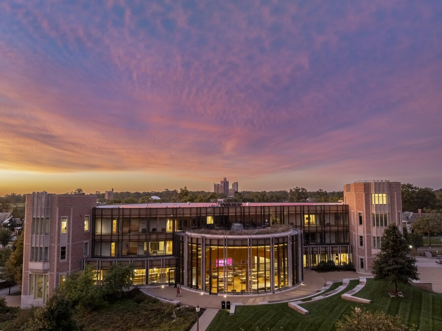
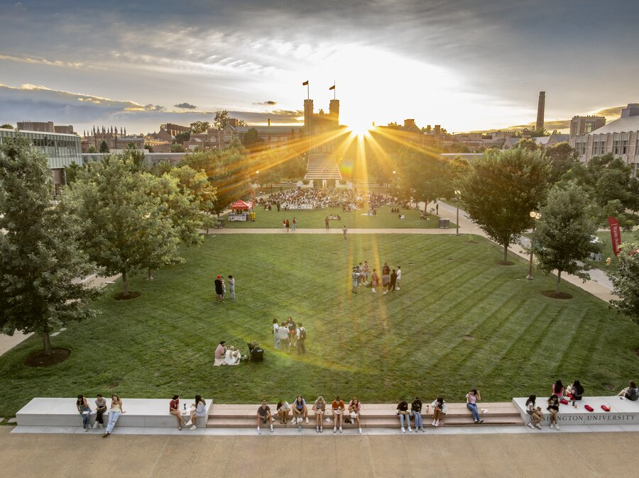
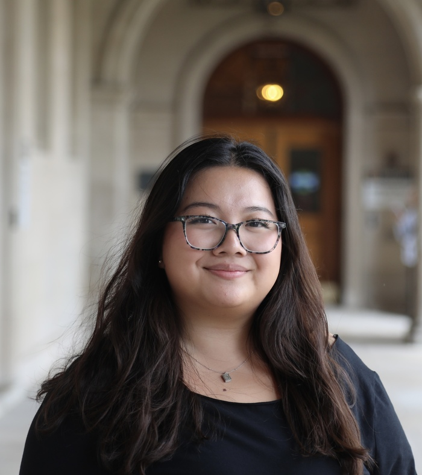

About
I grew up in Westborough, Massachusetts, founded a Girls Who Code chapter there mostly because I wanted the club I couldn't find, and now study computer science, math, and financial engineering at WashU in St. Louis. I like problems that involve both a person and a system — where the hard part isn't just making something work, but making it work for whoever has to use it.
Experience
Voluntary Research Collaborator, Software Engineering
The Intersection CompanyWorking full-stack on CiviCAD — the Intersection Company's engineering product and website — building on the compliance research from this past summer.
Consultant
CYC: Consult Your Community, WashU — consulting for Kivindyo EngineeringJoined WashU's student consulting organization and am currently consulting for Kivindyo Engineering.
Researcher/Intern
The Intersection Company & Worcester Polytechnic Institute Lab ResearchBuilt a RAG system for roadway compliance evaluation using an LLM and Python — designing experiments, writing the core pipeline, and validating output against real cases. Presented the work as a final report and working proof of concept.
Researcher/Intern
Holy Cross University Lab ResearchReviewed related papers to inform research strategy and future directions for Professor Lin's projects, and led a new initiative for tracking and reviewing information across the team, which tightened up the group's research workflow.
Paid Intern, BU GROW Program
Boston University Mechanical Engineering LabSelected for a program with roughly a 13% acceptance rate. Designed and built an automated self-driving experimental station to support PhD-level research, then presented the workflow at a faculty symposium.


Leadership & community
Developer, Capacity STL
Google Developer Group, St. LouisContribute to backend logic and data processing for a company-analytics project with Capacity — Java, APIs, and an analytics dashboard built for at-a-glance reading.
Professional Development
Women in Computer Science, St. LouisSupport professional development programming for undergraduate women in CS — speaker panels, skills workshops, and the events that help people build real career momentum.
GBM Chair & Executive Board Member
Chinese Student Association, St. LouisChair general body meetings and coordinate programming and outreach for the Chinese and Chinese-American student community, including large-scale cultural events and performances.
Founder / President
Girls Who Code, WestboroughFounded and led a chapter supporting girls interested in tech, growing it from 0 to 40 active members through outreach, marketing, and programming I built from scratch.
Skills
Interests
Also true about me

Concertmaster of the MMEA Districts orchestra, co-president and webmaster of my high school's Tri-M Music Honor Society, treasurer of National Honor Society, and — before any of that — a kid who won a business case competition against 200 people mostly because I like turning a messy problem into a clean story.
April, under the arches — WashU, Fall 2026